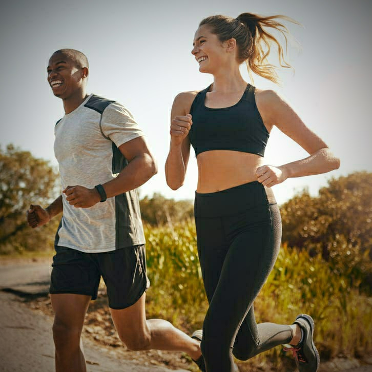

Exercise information
Workout keeps you physically as well as mentally healthy..
Know the benefits of different types of exercise like:
- Gym exercise
- Yoga
- Normal exercise
- And some health tips(Bonus tip: Tap on "Tips" in navigation bar and get new tips..)
-
Gym
-
Yoga
-

Normal-exercise